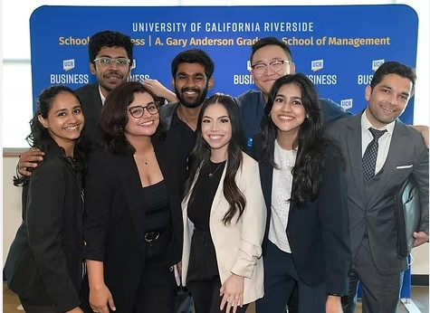
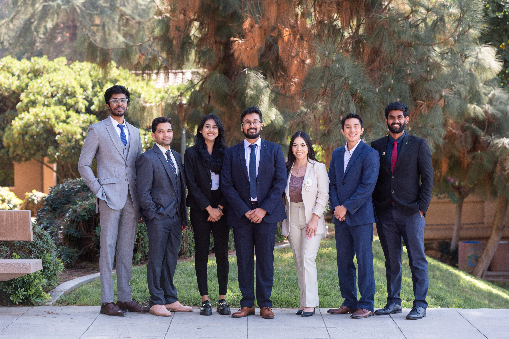

01
Business Analytics
Performance measurement, KPI reporting, exploratory analysis, data visualization and decision support.
BUSINESS ANALYTICS / DATA SCIENCE / FINANCE
I combine an engineering foundation with MBA training in Finance and Business Analytics to examine problems from operational, commercial and financial perspectives. My focus is turning complex questions into structured analysis, clear insights and practical recommendations.
ABOUT ME
My career began in engineering and program delivery, with experience across automotive manufacturing and defence systems. Working with technical, supplier and business teams taught me to structure ambiguous problems, coordinate requirements and timelines, investigate root causes, and communicate trade-offs.
An MBA focused on Finance and Business Analytics broadened that foundation into financial analysis, business intelligence and quantitative methods. I am now building toward analytics and data science roles where I can combine domain context, statistical thinking and clear communication to help teams evaluate performance, understand risk and make better decisions.
CAPABILITIES
A practical mix of business understanding, analytical methods and data communication.
Performance measurement, KPI reporting, exploratory analysis, data visualization and decision support.
Data preparation, statistical testing, regression, segmentation, predictive modelling and model interpretation.
Financial modelling, valuation, investment research, risk analysis and evidence-based comparison of alternatives.
Requirements analysis, project coordination, root-cause investigation, process improvement, and cross-functional execution.
SELECTED WORK
Examples of how I approach business questions through data, financial analysis and structured problem-solving.
A five-year DCF analysis connecting forecast assumptions, projected cash flows, terminal value and valuation sensitivity for a publicly traded energy company.
View project reportUse this entry for a completed dashboard or consumer analytics project. Explain the business question, data used, key comparisons and the decisions the findings can inform.
View project reportUse this entry for an applied modelling project, documenting data preparation, method selection, evaluation, interpretation and limitations.
View project reportRESEARCH & WRITING
A home for research papers, independent analysis, working papers and technical notes.
LEADERSHIP & RECOGNITION
Experiences and recognition that add context to my professional development beyond technical work.

INVESTMENT & CAMPUS INVOLVEMENT
As a portfolio analyst at HSIF at the University of California, Riverside, I applied financial analysis and investment research in a student fund setting to make a stock pitch.

AWARDS & RECOGNITION
Document a verified award, fellowship, scholarship or academic distinction. Include the issuing organization, date and what the recognition acknowledged.
LET'S CONNECT
For analytics opportunities, research discussions or professional collaboration, please get in touch.